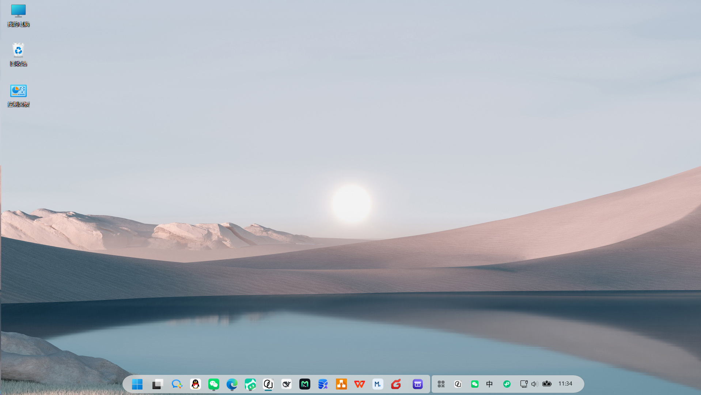
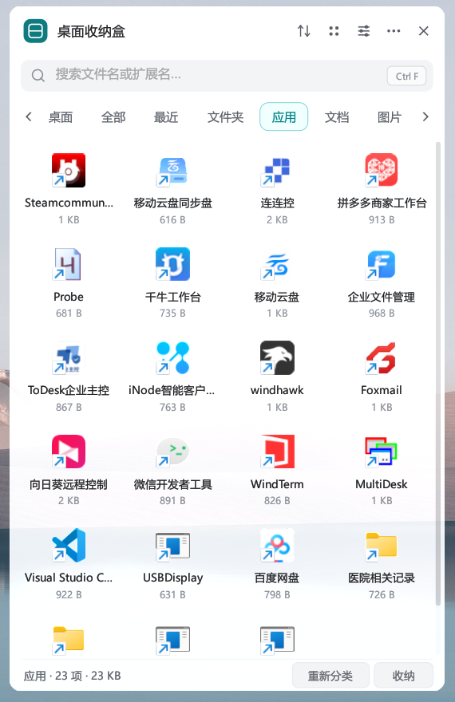
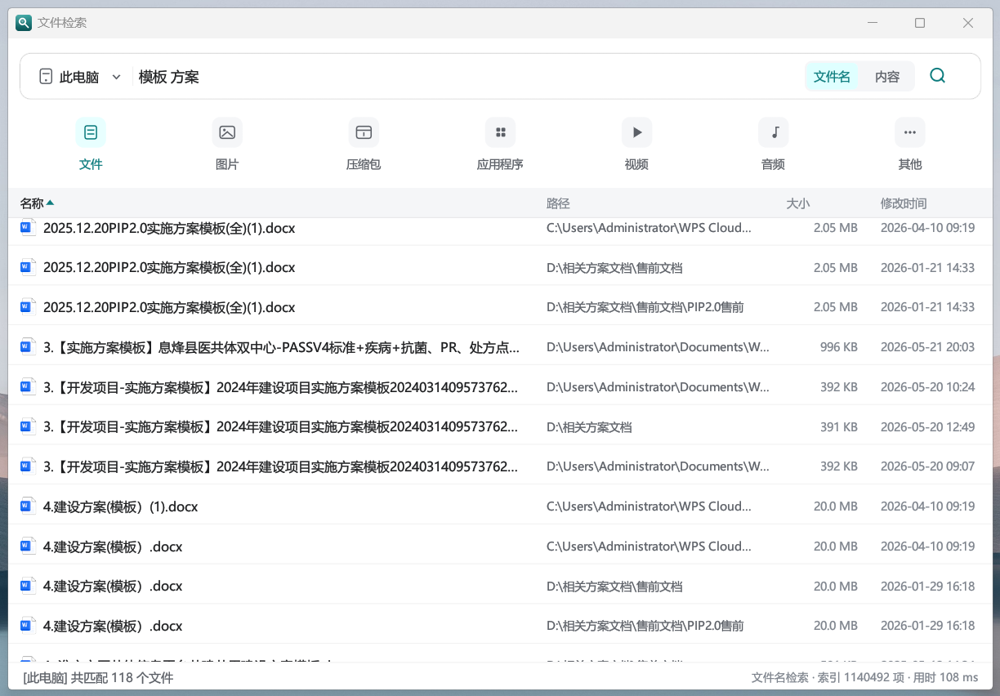
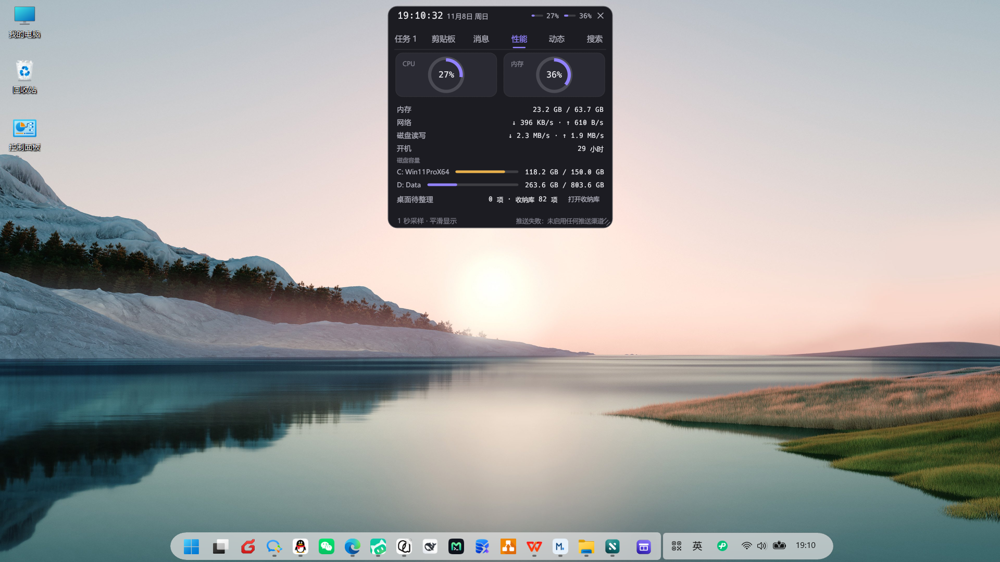
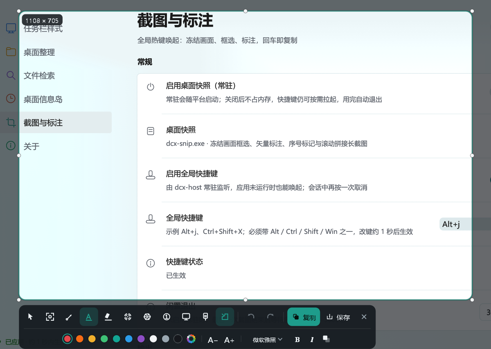

Windows 11 桌面增强平台
任务栏主题 · 桌面收纳盒 · 文件检索 · 桌面信息岛 · 桌面快照

DCX 是一套用 Rust 编写的 Windows 11 桌面增强平台。它把五件事做成彼此独立的进程：任务栏主题、桌面收纳盒、文件检索、桌面信息岛、桌面快照。宿主常驻托盘，负责注入看门狗、应用生命周期、全局热键和统一设置中心；应用崩溃不会带走宿主，宿主退出会统一停止应用。
当前版本 v0.1.3，已在 Windows 11
10.0.26200x64 实机验证。任务栏引擎针对当前 Win11 视觉树实现，Windows 大版本更新后可能需要重新核对元素路径。

任务栏主题与桌面收纳盒按钮

桌面收纳盒：应用分类视图

文件检索：名称 / 路径 / 大小 / 修改时间

桌面信息岛：时钟、性能、任务、剪贴板、消息、动态、搜索六个页签

桌面快照：两行标注工具条与「截图与标注」设置页
| 模块 | 能力 |
|---|---|
| 任务栏主题 | 胶囊 / 卡片两种 dock 形态；图标缩放 50–125%；间距 −6…+6 px；Dock 悬停放大；任务栏高度 30–44 DIP；设置热重载 |
| 桌面收纳盒 | 桌面保持 Explorer 原生显示；收纳 = 物理移入独立库目录；分类、拖拽、右键菜单、库路径修改与迁移；Alt+D 唤出 |
| 文件检索 | 文件名 + 内容检索；通配符、空格 AND、ext: / path: / regex: 前缀；名称/路径截断时悬停显示完整内容；默认关闭，Alt+S 唤起 |
| 桌面信息岛 | 屏幕顶部悬浮胶囊：时间、CPU/内存/磁盘/网络、到点提醒（铃铛摆动 + 提示音 + 底色脉冲）、图文剪贴板历史、QQ/微信/企业微信/邮箱/系统通知聚合、系统媒体会话、本地脚本推送卡片、应用与文件快捷搜索；默认关闭，Alt+I 展开 |
| 桌面快照 | 冻结整屏框选（八向缩放、方向键微调、空格 拖动）；矩形 / 箭头 / 文本 / 荧光笔 / 模糊 / 聚光六种标注，二次编辑与 100 步撤销；Enter 复制为 CF_DIB + PNG，Ctrl+S 另存；默认关闭，Alt+J 唤起 |
| 平台 | 托盘、注入看门狗、应用启停、开机自启、Win11 风格设置中心 |
dcx_engine.dll 注入 explorer.exe，把主题规则写入任务栏 XAML；设置写入 %LOCALAPPDATA%\dcx\settings.toml 后，引擎约 1 秒内热重载，无需重启 Explorer。
Background（只高亮）/ Dock（按距离放大并推开相邻图标）桌面上的文件仍由 Explorer 原生管理；把文件收进盒子时，它会被物理移动到收纳库（默认 文档\dcx收纳），桌面图标随之消失，文件本身不会删除。把库内项目拖回桌面即恢复原状。
organizer.tomlAlt+D独立进程 dcx-search.exe，默认不常驻、不预建索引；首次通过 Alt+S 唤起后在后台建立索引，结果边建边出。
* ? 通配符、空格表示 AND、ext: / path: / regex: 前缀Alt+S独立进程 dcx-snip.exe，默认不常驻：Alt+J 由宿主按需拉起，抓完一帧后即可框选，空闲 30 秒自动退出（可调）。
EDIT 子窗口，系统中文输入法、候选框、剪贴板快捷键可用；编辑框按工具条的深色面板重新配色。CF_DIB（Word / 微信 / 传统 Win32 程序）与注册格式 PNG（Chromium / Slack / 现代编辑器），所以「粘贴成黑块」这一常见问题不会出现。图片\DCX 截图，PNG 或 JPEG，文件名带毫秒级时间戳并自动避让重名。独立进程 dcx-island.exe，默认关闭；在「设置中心 → 桌面信息岛」开启后，屏幕顶部居中显示常驻胶囊。窗口不占任务栏槽位，不依赖 dcx_engine.dll 的 box_slot.txt 预留协议。
Alt+I 展开✕ 或 Esc 收起；窗口尺寸随同一段缓动一起长大，内容向两侧铺开09:00 或 09:00-18:00，写了区间即表示起止，例：喝水 工作日 09:00-18:00 每30分 就是一条记录、一天 19 次提醒，睡过去的时段只补一次，不会醒来刷屏SHELLHOOK，不读聊天正文）；QQ 走 WinRT 通知监听并按 AUMID 过滤；邮箱走 IMAP 只同步未读邮件头；系统通知走 WinRT 通知中心（默认关）127.0.0.1 + Bearer 令牌），支持 dcx-island.exe --push / --push-file，动作只有打开链接/文件夹/看面板；端点与示例可在「设置中心 → 桌面信息岛 → 本地推送 API」中复制Enter 打开首项、Ctrl+Enter 定位；内容检索与类型筛选请用 Alt+S 文件检索（索引快照年龄会标注在结果标题行）%LOCALAPPDATA%\dcx\island_api_token.txt 的一个本地文件，只授予「往岛上推卡片」这一项能力从 Releases 下载：
DCX-v0.1.3-win64.zip — 便携包SHA256SUMS.txt — 二进制校验和DCX 文件夹到任意位置（不要只取出 exe，宿主按同目录查找 dcx-box.exe、dcx-search.exe、dcx-island.exe、dcx-snip.exe、dcx_engine.dll 和 wh_injector.exe）。start-dcx.bat：只留托盘，不弹设置窗口。dcx-host.exe：默认带设置窗口启动。系统要求：Windows 11 x64。便携包无需安装；设置和索引写入 %LOCALAPPDATA%\dcx\。
| 快捷键 | 动作 |
|---|---|
Alt+D |
打开 / 收起桌面收纳盒 |
Alt+S |
打开文件检索 |
Alt+I |
展开 / 收起桌面信息岛（需先在设置中心启用信息岛） |
Alt+J |
打开桌面快照（框选截图与标注） |
四个热键都可在设置中心修改或关闭，由宿主常驻监听；文件检索不依赖检索进程是否已启动，信息岛则要求主开关处于开启状态。
托盘左键打开设置，右键菜单包含「设置 / 退出」等操作。设置页分为：
设置改动防抖 220 ms 后原子写入，引擎约 1 秒内热重载；没有「保存」按钮。
默认收纳库是系统「文档」目录下的 dcx收纳。收纳库是普通目录，可以放到其他磁盘；在设置页修改路径时会先确认，再迁移文件并重建根目录，手动分类记录会跟随迁移。
桌面本身不会被 DCX 隐藏或接管：收纳只改变文件所在位置，不修改文件属性，也不绘制桌面层。
%LOCALAPPDATA%\dcx\ 下的 TOML 文件通信，没有私有共享内存或管道。dcx-host/src/apps.rs 注册一条 AppEntry，不需要改设置窗口的导航结构。| crate / 文件 | 作用 |
|---|---|
dcx-host |
宿主：托盘、注入看门狗、应用生命周期、全局热键、统一设置中心 |
dcx-box |
桌面收纳盒；独立窗口与任务栏按钮 |
dcx-search |
文件检索；名称索引 + 内容流式检索 |
dcx-island |
桌面信息岛；胶囊/面板单窗口、性能采样、剪贴板、任务、通知聚合 |
dcx-island-config |
信息岛配置模型（island.toml）与共享凭据管理；宿主与信息岛共读 |
dcx-engine |
注入 Explorer 的任务栏 XAML 主题引擎 |
dcx-organizer |
收纳盒数据层：分类、manifest、桌面扫描与物理移动 |
dcx-settings |
平台设置模型与 TOML 持久化 |
dcx-theme / dcx-xaml / dcx-blur |
主题规则、XAML 属性系统、合成画刷 |
dcx-win32 / dcx-core |
手写 Win32 绑定与平台基础层 |
dcx/
├── crates/
│ ├── dcx-host/ # 宿主 + 设置中心
│ ├── dcx-box/ # 桌面收纳盒
│ ├── dcx-search/ # 文件检索
│ ├── dcx-island/ # 桌面信息岛
│ ├── dcx-island-config/ # 信息岛配置与凭据（共享）
│ ├── dcx-engine/ # 任务栏引擎 DLL
│ ├── dcx-organizer/ # 收纳盒数据层
│ ├── dcx-settings/ # 设置模型
│ ├── dcx-theme/ # 主题规则
│ ├── dcx-xaml/ # XAML 绑定
│ ├── dcx-blur/ # 合成画刷
│ ├── dcx-win32/ # Win32 绑定
│ └── ...
├── brand/ # 图标、Logo、预览图
├── docs/images/ # README 截图
├── tools/ # 品牌/图标生成、验证与分发启停脚本
└── README.md运行时文件都在 %LOCALAPPDATA%\dcx\：
| 文件 | 所有者 | 内容 |
|---|---|---|
settings.toml |
宿主 / 引擎 | 任务栏形状、图标缩放、间距、高度、悬停效果 |
organizer.toml |
宿主 / 收纳盒 | 分类、手动分类、收纳库路径、视图偏好 |
search.toml |
宿主 / 检索 | 快捷键、检索范围、排除规则、索引策略 |
island.toml |
宿主 / 信息岛 | 唯一启停开关、时钟/性能、任务、剪贴板、渠道与出站配置 |
island_tasks.json / island_clipboard.json |
信息岛 | 任务与剪贴板历史（本地数据，不上传） |
apps.toml |
宿主 | 各独立应用的启停状态 |
这些文件不在仓库里；仓库只包含源码、品牌资源和生成脚本。
六个 TOML 与两个 JSON 都是多进程读写，因此写入遵循同一套规则（实现见 dcx-win32/src/config_file.rs）：
dcx-host.exe、dcx-host.exe --settings、dcx-box.exe、dcx-search.exe、dcx-island.exe 不会互相覆盖。flush，再用 ReplaceFileW / MoveFileExW 换入；没有「rename 失败就直接覆盖」的回退分支，换入失败时旧文件保持原样。要求：
rc.exe；缺失时构建会跳过图标）git clone https://github.com/gggaiitx/dcx.git
cd dcx
cargo build --release构建产物在 target\release\：
dcx-host.exedcx-box.exedcx-search.exedcx-island.exedcx_engine.dllwh_injector.exe 是随发布包提供的外部注入器，不由本工作区编译。源码运行时需要把它放到 dcx-host.exe 同目录，或通过 DCX_INJECTOR 指向它；引擎 DLL 也可通过 DCX_ENGINE_DLL 指定。
宿主按自身所在目录查找 dcx-box.exe / dcx-search.exe / dcx-island.exe，因此从源码运行时要保证这些 exe 与宿主在同一个目录。开发用启动脚本见 tools/run.ps1。
仓库没有 CI；Windows 相关行为（注入、XAML、DPI、任务栏）需要实机验证。可先运行：
cargo test --workspace
cargo clippy --workspace --all-targetsdcx_engine.dll 注入 explorer.exe，属于系统级改动；升级引擎请使用 update-engine.bat，不要在 Explorer 运行时直接覆盖 DLL。dcx_engine.dll 调用 FreeLibrary。XAML 持有注入期间注册的 TAP 对象与元素句柄，卸载镜像会让 Explorer 跳进已释放的代码页（0xc000027b）。唯一受支持的卸载方式是结束并重启 Explorer——「恢复任务栏」做的就是这件事。%LOCALAPPDATA%\dcx\。docs/，不随仓库发布tools/gen_brand.py、tools/gen_search_icon.py、tools/gen_island_icon.pytools/stop-dcx-all.bat（源码）/ 发布包内的 stop-dcx-all.bat本项目以 MIT License 发布，详见 LICENSE。欢迎 Issue 和 PR。